相良観音/熊本県
熊本県山鹿市にある相良観音。
木彫としては国内最大級の千手観音がおわす、ということで以前から訪れたかった寺のひとつ。
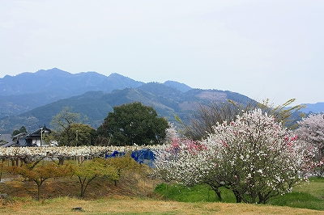
山間の里に桃、梨、桜の花が咲き誇るその景はまさに桃源郷を思わせる眺めだ。
そんな相良観音の名物はくりまんじゅう。チョット卑猥な気がするのは…俺だけじゃないよね!?
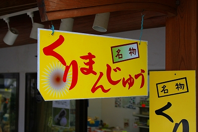
で、本堂。
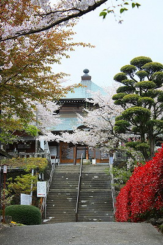
今でこそ静かな寺だが、最澄が１２００年前に開いたという由緒ある寺で、かつては数多くの塔頭があったという。
現在では安産や子授けにご利益があるそうで大祭の日は大勢の参拝客が訪れるのだという。
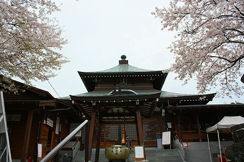
訪れたのは夕刻。まさに本堂を閉めようか、という時間帯だった。
ここに来るまでにあちこち寄り道してきたのですっかり遅くなってしまったのですよ。
ああ、こんなことならあんなところやこんなところに行かなきゃ良かった…と若干反省しつつ、無理を言ってチョットだけ拝観させてもらった。
これが日本一の千手観音である。
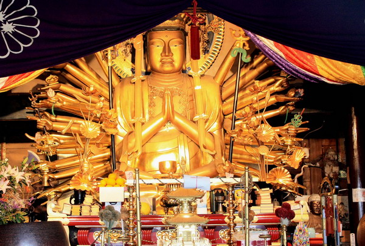
大きさは丈六サイズ、永正14（1517）年建立の大千手観音像である。
なんだろう？このワクワクする感じ。
肘関節一切無視な感じのストレートな千手とか中央の観音サマの身体の窮屈な感じ。
…そっか、ロボっぽいんだ。
ついでに言うと熊本県下には造形的に特徴のある仏像が結構多いと思う。珍仏マニアは熊本を目指すのが吉ですぞ。
勿論ココでいう特徴的な造形とはこのサイトを御愛顧の方だけが喜びそうな仏像ですよ〜。
わずかな時間の拝観であったが素敵な観音サマであった。
さて、堂内を拝観した後、本堂脇のスペースを見てみる。
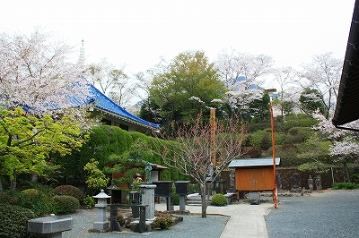
そこにはダイキャスト製っぽい仏像がずらりと並んでいた。
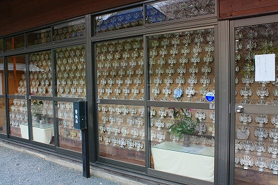
おお、よくよく見れば千手観音じゃないの。
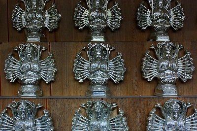
コレ良いなあ〜。ウチにもズラッと並べたいわ〜。100体位。
もしやお寺の寺務所で売ってるのかも…と思ったら既に閉まってました。残念。
で、ダイキャスト千手観音を指をくわえて見ていると奥の方に何やらただならぬオーラを察知。
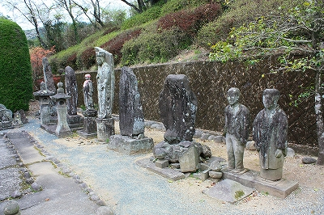
そこには男女の石像が並んでいた。
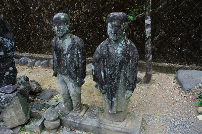 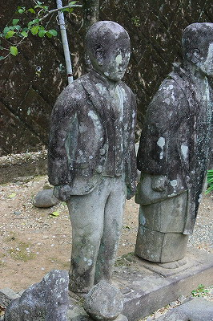
夫婦なのだろうか。男性はスーツ姿、女性は着物姿である。
表情は乏しく目鼻立ちも微妙にマンガっぽいのだが、着物や背広の造形には中々の力量を感じる。
コレを作った石工さんはさぞ大変だったと思う。
石とコンクリの違いこそあれど、どこかタイのワットケークにあった夫婦像を髣髴とさせる佇まいだ。
にしても何故にお寺の境内に人物像？しかも石で。
会社の庭に創業者、駅や役所の前に郷土の名士、の銅像があるのは良くある光景だが、お寺に一般人の石像があることは稀だ。
いや、まず見かけないぞ。
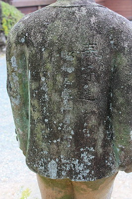
男性の背後に字が刻まれていた。
苔が付着していて見難いが「寄進」「昭和五年二月十七日」という字が。
これは想像だがこのお寺に関係する人物が何かの記念に夫婦の石像を寄進した、と考えられる。
夫婦で80回目の花見。良い場所に設置してもらいましたね。
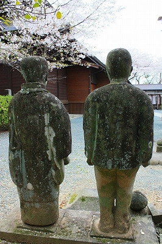
って今気づいたけど旦那さんの足の間、離れてんだ…芸が細かいなあ。
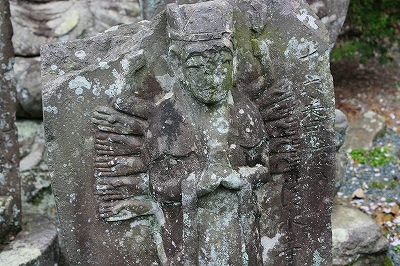
こちらの千手観音もムカデみたいで中々素敵ですね。
2009.04.
珍寺大道場 HOME